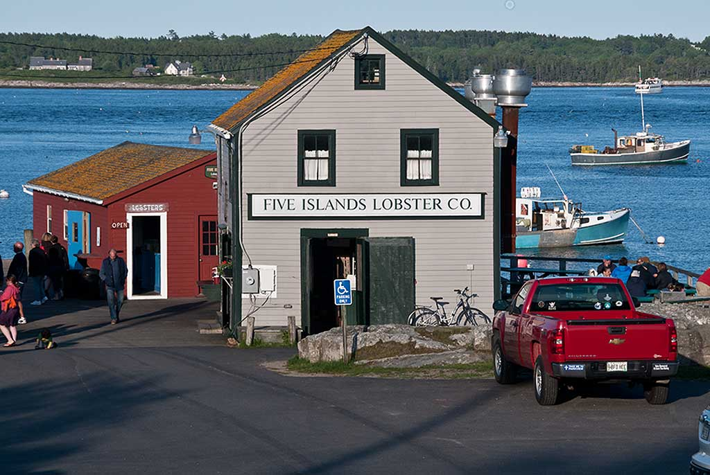
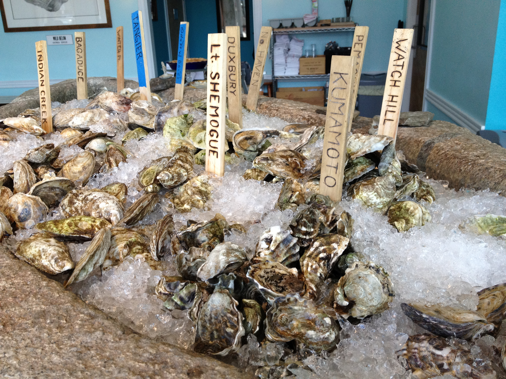

Hugo's restaurant has evolved dramatically. Since opening its doors in 1988, the once-humble family eatery has gone on to garner national attention for its refined cuisine. Seated at the top of Portland's Old Port in the burgeoning India Street neighborhood, Hugo's marks the division between the old and new, embracing tradition and pursuing innovation.
Five Islands Lobster Co. is perched on an active fishing wharf, on the edge of Sheepscot Bay, surrounded by some of the coldest and deepest waters on the coast. Locals here know these waters produce the most delicious and sought-after lobsters to be found anywhere. Nestled in the fishing village islands of Georgetown, also known as "the prettiest harbor in Maine", Five Islands Lobster Co. stands out in a sea of dining options with the perfect combination of exceptional food and classic Maine atmosphere.
Eventide Oyster Co. offers pristine shellfish and a fresh take on classic New England fare-such proximity to the Gulf of Maine provides the sharpest seafood money can buy. A wine list chosen to complement shellfish, craft cocktails, and a warm sense of hospitality bring laid-back extravagance to Portland's Old Port. Sunken into the concrete bar sits an enormous block of Maine granite that serves as the shellfish display, home to an ever-changing array of oysters and shellfish. The restaurant's bright colors, picnic table seating and reclaimed nautical lighting encourage a playful experience.